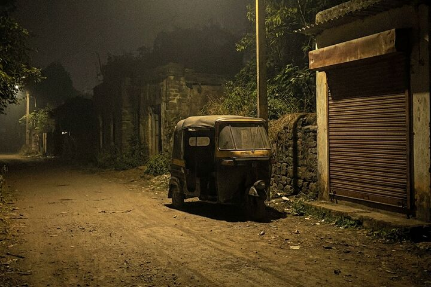

Kolwadi family dispute: autorickshaw driver allegedly beaten to death by father-in-law, grandfather-in-law
Police have registered a murder case against the 45-year-old father-in-law and 65-year-old grandfather-in-law of an autorickshaw driver whose relatives had told doctors he was hurt in a motorcycle fall.

IllustrationA 24-year-old autorickshaw driver’s death near Pune, first described as a motorcycle accident, is now a murder case: police say he was allegedly beaten to death by his father-in-law and grandfather-in-law following a family dispute in Kolwadi village on the outskirts of Pune.
According to the FIR, registered on November 10, the driver and his wife had an argument on the evening of November 9, after which she left their home. Around 8.30 pm, the father-in-law and grandfather-in-law allegedly brought him, unconscious and injured, in an autorickshaw to the area below his brother’s residence and said he had suddenly fallen.
His brother, the complainant, alleged that the two, angry over the couple’s dispute, assaulted him on his head, hands and back with a weapon.
He was taken to a private hospital in Kharadi with multiple injuries, where he was declared dead. His relatives had told doctors that he was hurt in a fall from a motorcycle in the Pawarvasti area.
Senior Inspector Sunita Rokade, in charge of Lonikand police station, said that when police visited the spot identified by the two men there were no signs of an accident and no witnesses. Rokade said the postmortem showed the head injury could not have been caused by a motorcycle fall.
Police have registered a murder case against the father-in-law, 45, and the grandfather-in-law, 65, under Sections 103(1) and 3(5) of the Bharatiya Nyaya Sanhita.